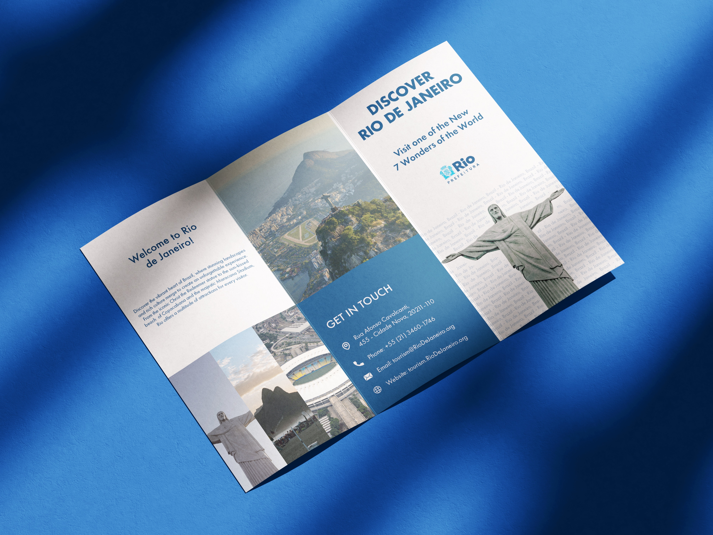
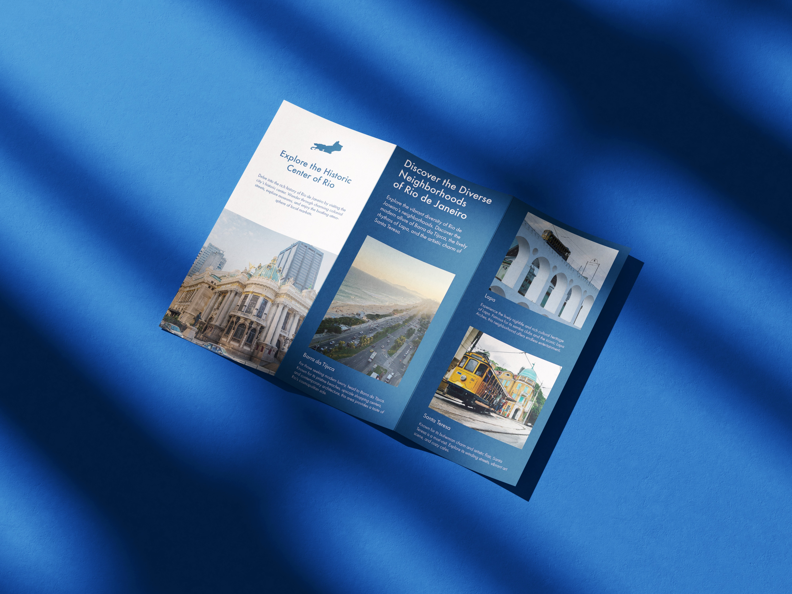
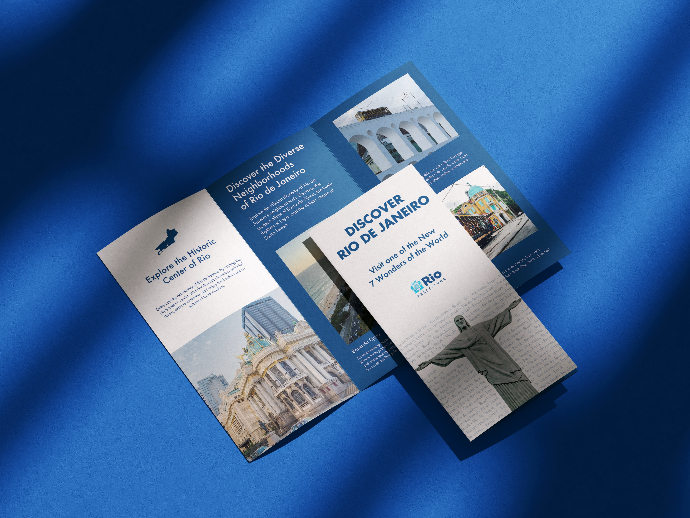
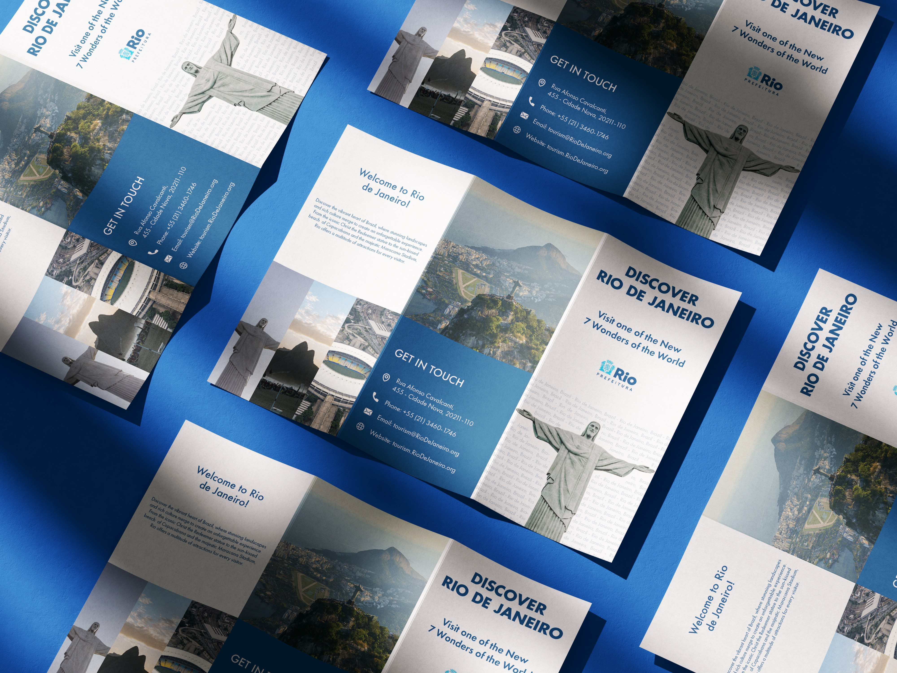

Print Design
Rio de Janeiro Brochure
A trifold tourism brochure designed for international travelers, balancing vibrant cultural energy with a clean editorial structure.

Project Description
Vibrant, minimal, and easy to navigate.
The brochure was created to present Rio de Janeiro as energetic and welcoming without overwhelming the reader. The layout uses bright visual moments, clean spacing, and structured content to guide travelers through the city experience.
Using Rio's visual references and tourism tone, the design balances excitement with clarity, making the brochure feel both useful and visually engaging.
- Structured information clearly within a compact trifold format.
- Used color and image pacing to capture Rio's atmosphere.
- Created a polished print piece for a travel-focused audience.



